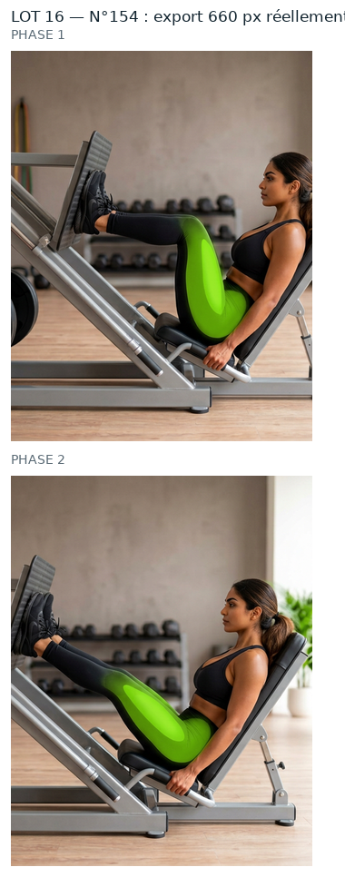
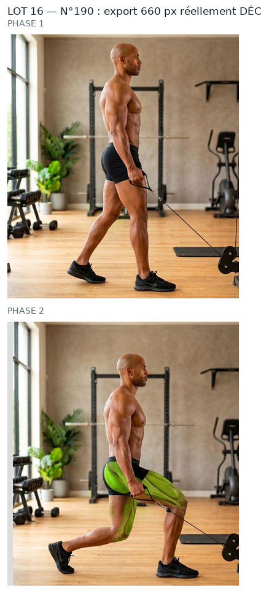
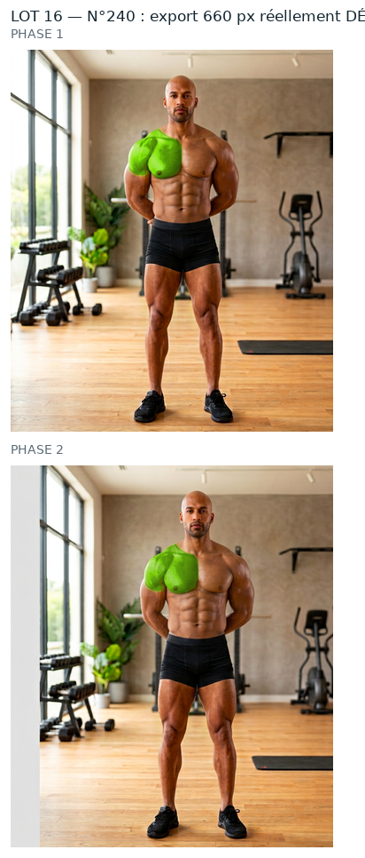
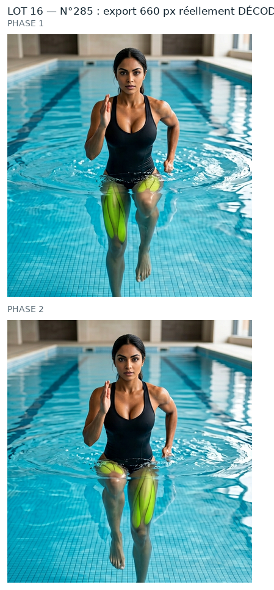

Mêmes règles que le n°44 et les lots précédents que tu as validés : source PNG native, aucun agrandissement, retouche à la résolution de la source, vert ramené dans la famille du n°260, puis WebP animé 660 px (+ GIF de secours). Rien n'est intégré : aucun GIF livré remplacé, APK intact, 0 image générée.
Meilleure couverture de toute la serie (0,97-0,99) avec un debordement de 0,06 : la planche native et le GIF livre peignent vert exactement au meme endroit. Zone la plus vaste jamais traitee (36 859 px). Vert sursature 0,990 -> 0,944.
zone verte étendue (19923 px) : à vérifier qu'elle ne déborde pas sur le décor
Couverture la plus basse du lot (0,25 en phase 1). Le manque tombe sur du vert pale (halo), pas sur la peau (7 %). Petite zone (5 145 px). A regarder : le vert couvre peu.
contour large : 9.75 px de transition sur la phase 2 (3 à 6 px sur les numéros les plus nets) — le bord du vert y est plus doux
teinte de la source à 76.2°, éloignée des 86,3° du n°260 — la couleur de départ est différente
Ces planches montrent ce que contient réellement le WebP et le GIF de repli (fichiers rouverts image par image), pas le PNG de travail.

n°154 — WebP + GIF décodés

n°190 — WebP + GIF décodés

n°240 — WebP + GIF décodés

n°285 — WebP + GIF décodés
Ce qui reste écarté
n°1, 9, 10 : vert = feuillage du décor (décision du 01/10/2026).
n°218, 235, 239 : planche annoncée ≠ GIF livré (47 à 80/255) — chantier à part.
34 numéros « femme » sans source native (210, 224-259, 274-276, 289-330) : aucune source, donc hors de cette méthode.
Limites (inchangées)
Le GIF reste limité à 256 couleurs par image : c'est le WebP qui porte la qualité.
Au-delà de 660 px d'export on n'ajoute aucun détail, seulement du poids.
Les ROI sont dérivées de la tache verte mesurée dans le GIF livré, pas posées à l'œil (pas de vision dans cette session) : à confirmer visuellement.
Dis-moi, numéro par numéro : « 154 OK » · « 190 OK » · « 240 OK » · « 285 OK » — ou ce qui cloche (teinte, contour, zone mal placée…). Rien ne sera intégré et aucun GIF livré ne sera remplacé avant ton accord.
Contrôles chiffrés
ROI, seuils, percentiles, poids, PSNR et garantie « aucun pixel modifié hors zone » : evolution/media/refonte-photo/hd-2026-09-30/lot16/CONTROLES.json